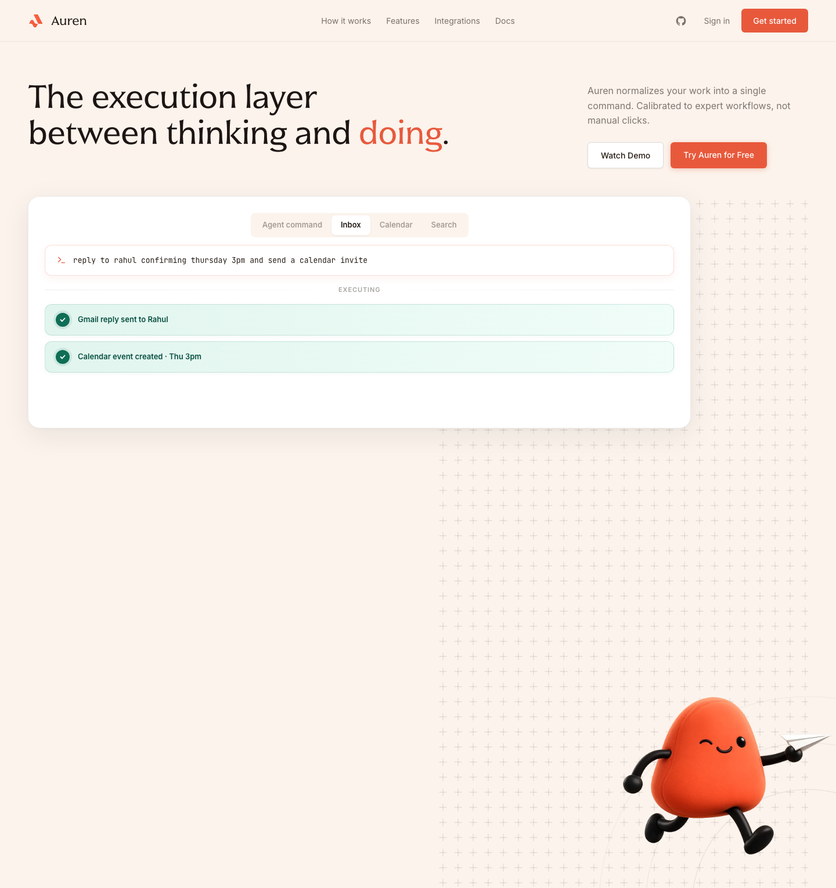
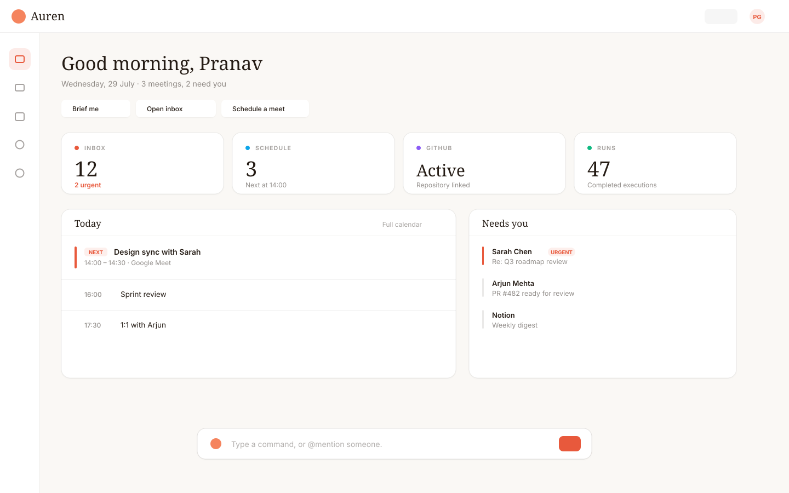

Four tabs. Three tools. One task.
The execution layer
between thinking and doing.


Schedule a 30-min sync with @Sarah Thursday 2pm
Auren will run 2 actionsReview and edit before anything happens
1
calendar_create30-min Google Meet with Sarah · Thursday 2:00 PM
2
gmail_sendEmail sarah@example.com the agenda and meeting link
CancelConfirm
nothing happens until you say so
One approval.
Calendar
Design sync with SarahThu 2:00 – 2:30 PM · Google Meet
✓Sent
sarah@example.comAgenda + meeting link
✓
Auren
tryauren.in · Now in beta